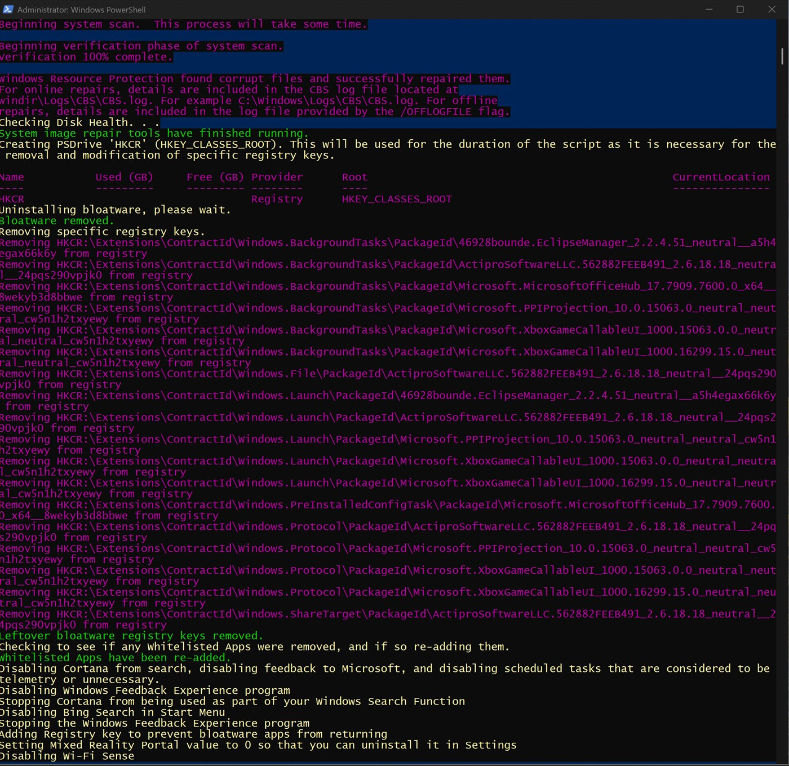
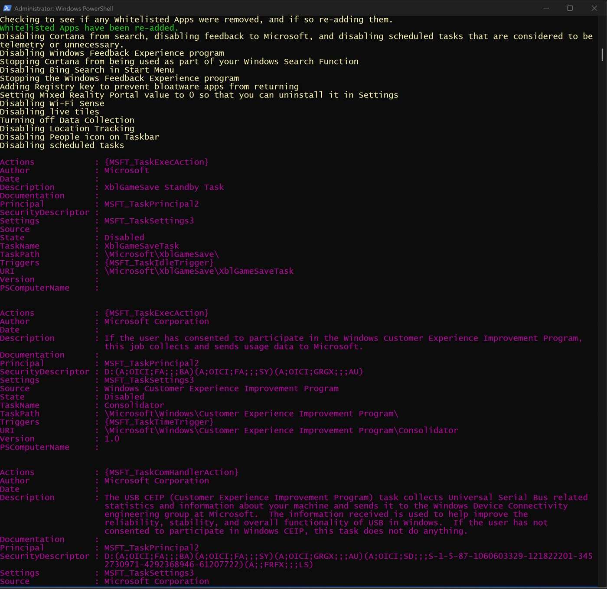
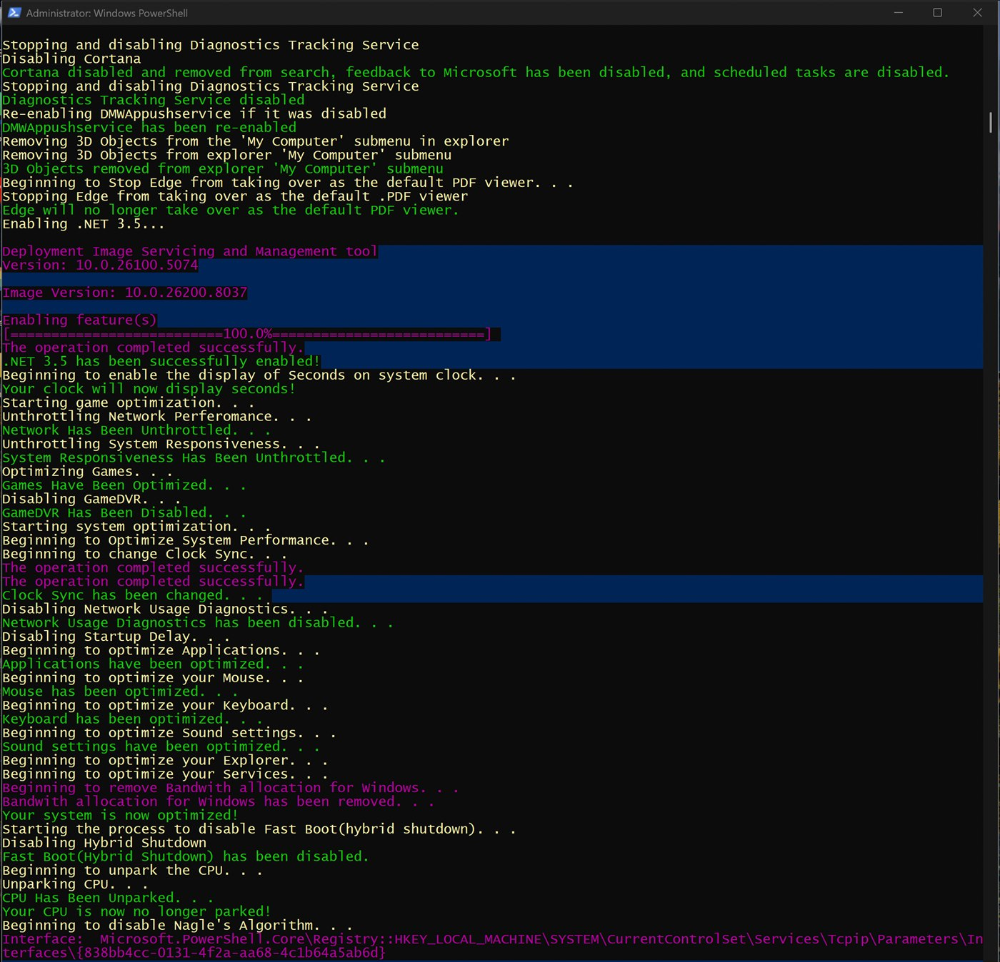
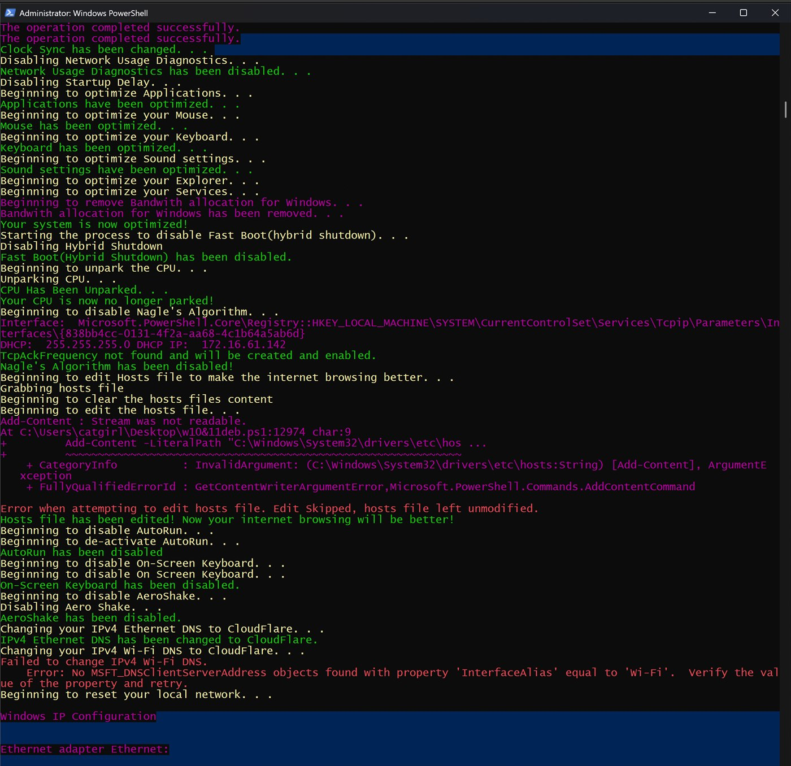
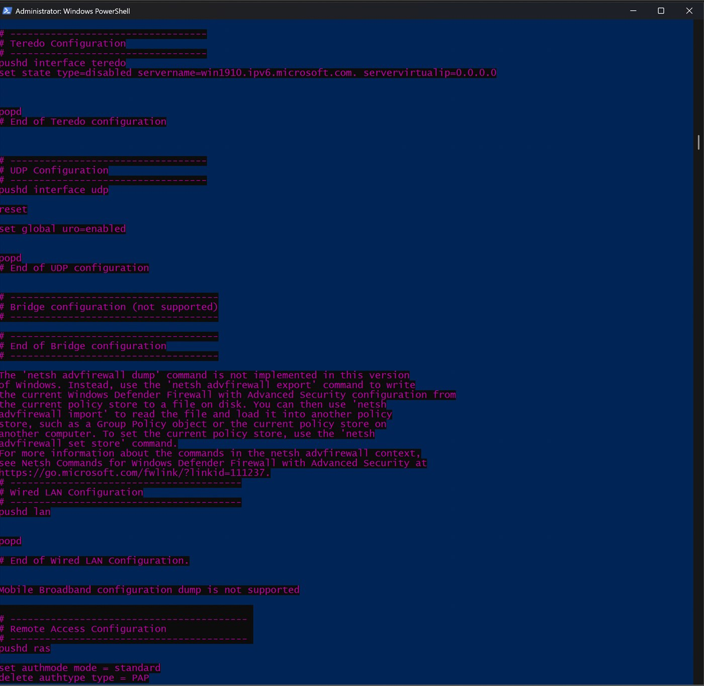
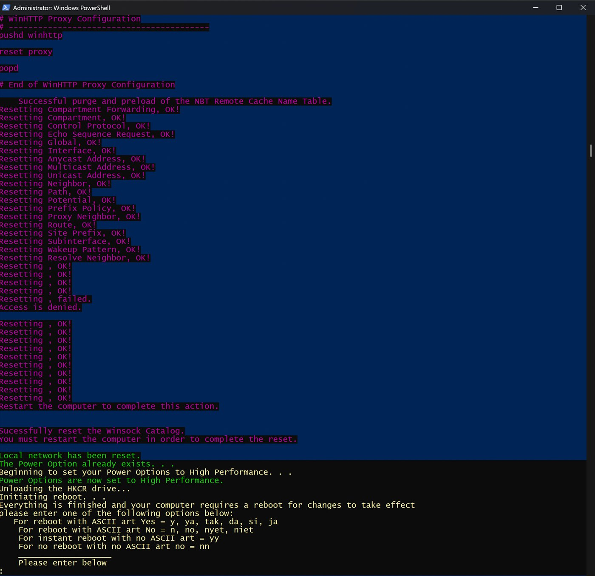

Windows 10/11 Debloat & Optimize
PowerShell · Windows Internals · Registry Tuning · System Optimization · Virtualization Testing
Status: [ ARCHIVED ]
Windows 10/11 Debloat & Optimize is an all-in-one PowerShell project built to automate post-install and post-update Windows cleanup, debloating, tuning, and quality-of-life configuration.
Built on top of the original Windows10Debloater project, this version expands the concept with additional optimization, networking, privacy, gaming, and general system tweaks. The goal is to reduce manual setup time and give users a cleaner, more controlled Windows experience after a reformat or major update.
The script was tested in a virtualized Windows environment with VMware before being used on host systems.
Key Features
- Creates a System Restore point before major changes
- Runs DISM and SFC health and repair checks
- Removes common Windows bloatware and unnecessary AppX packages
- Applies registry-based system, explorer, keyboard, mouse, and service-related tweaks
- Includes gaming-focused changes such as GameDVR-related tuning, responsiveness adjustments, and network throttling-related tweaks
- Unparks CPU cores
- Disables AutoRun
- Applies TCP/network-related tweaks, including Nagle-related changes
- Changes DNS settings to Cloudflare
- Modifies the hosts file using a large blocklist with custom additions
- Includes additional privacy, cleanup, and general quality-of-life changes
What This Project Demonstrates
- PowerShell scripting for real-world Windows automation
- Registry modification and system configuration management
- Practical Windows debloating and post-install workflow design
- Safe testing habits through virtualization before host deployment
- A hands-on approach to endpoint tuning, usability, and system control
Notes
Archived: this earlier version is kept for reference. Its successor is WindowsGG, a rebuilt third generation of the script.
This is an opinionated tuning script intended for users who want more control over Windows behavior. Some changes are aggressive by design, so the project is best presented as a practical automation and tuning tool rather than a guaranteed performance booster.
Screenshots






